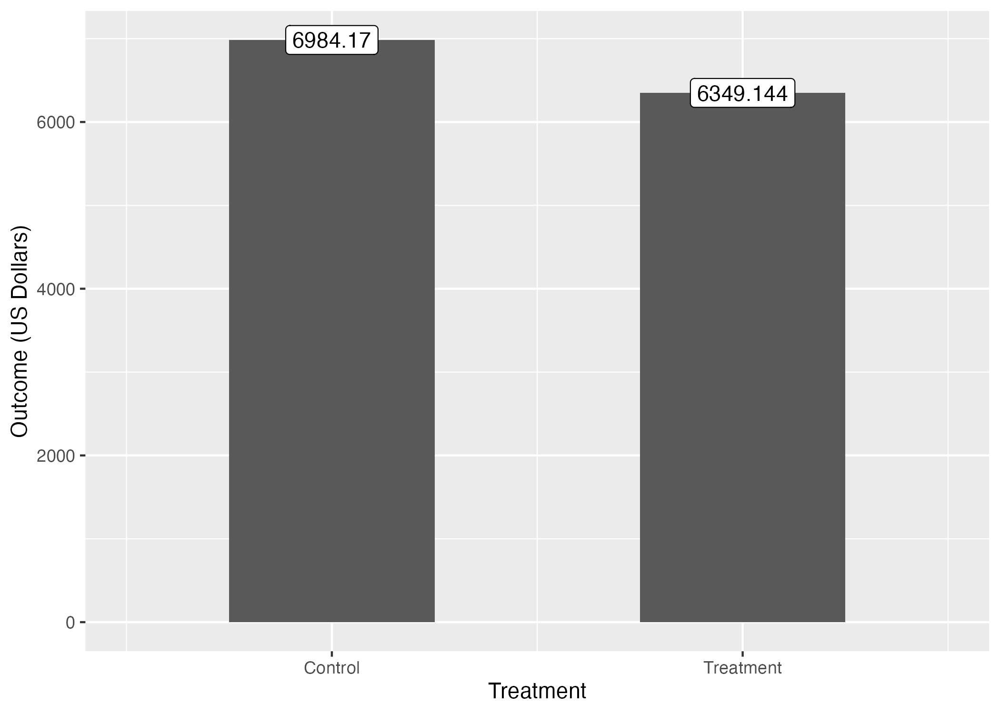
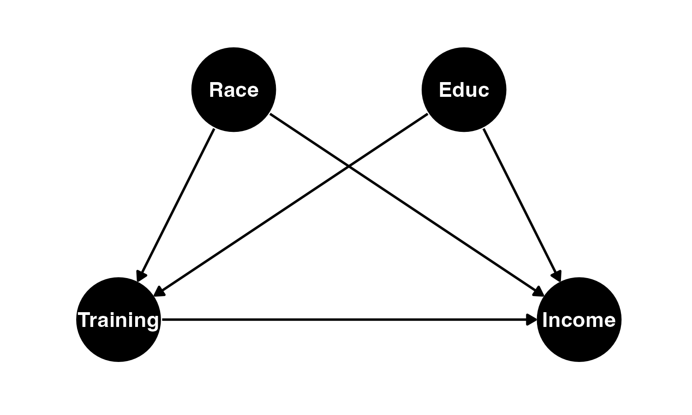
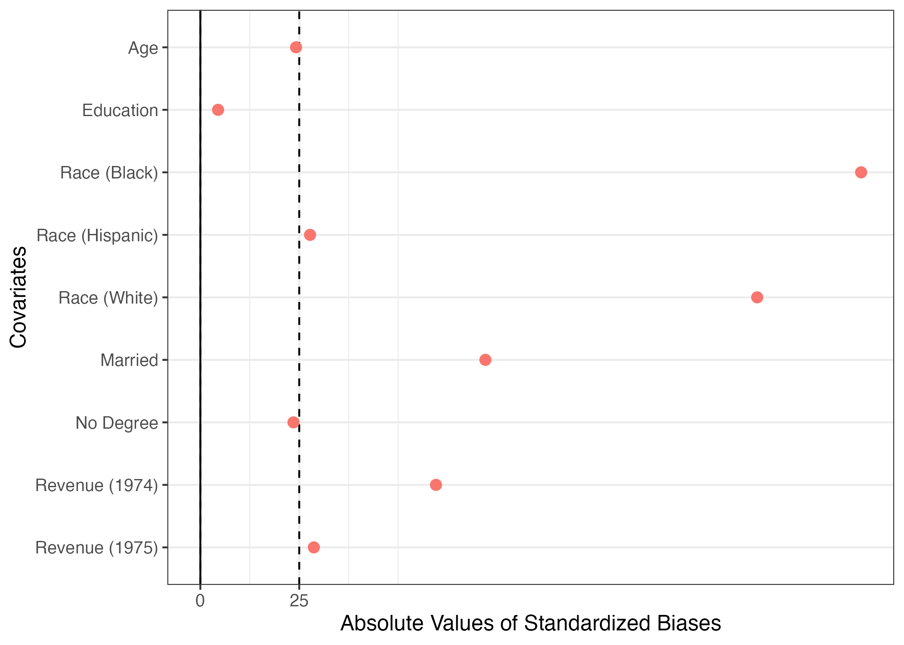
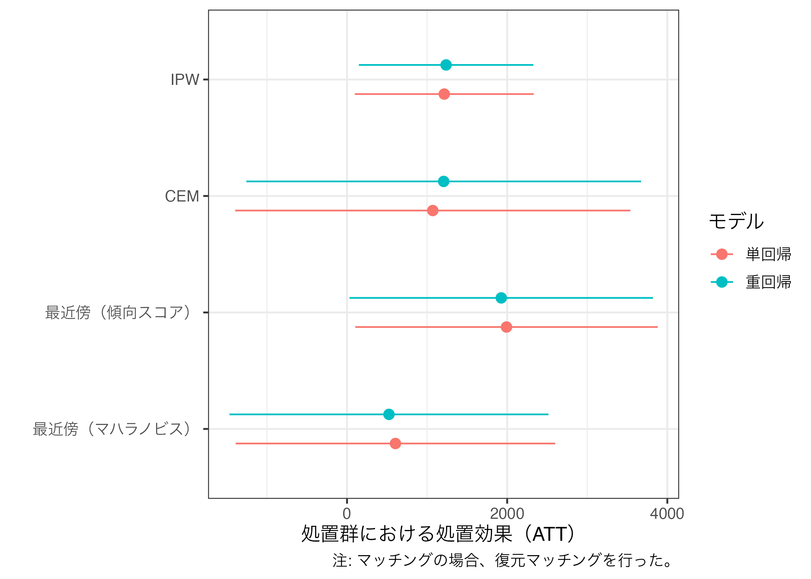
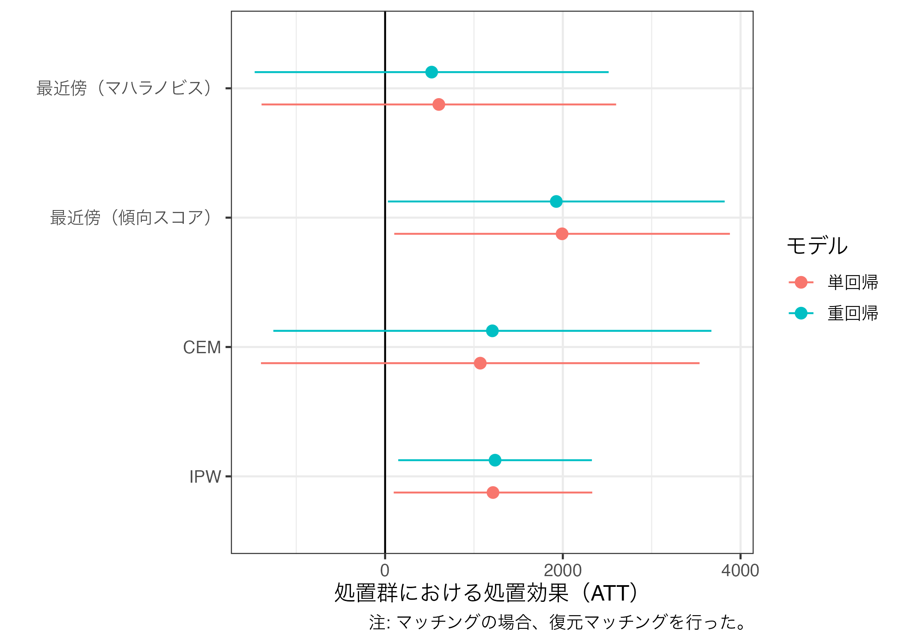

マッチング
スライド
セットアップ
本日の実習で使用するパッケージを読み込む。
マッチングにおける古典的なデータセット、lalondeを読み込む。data(lalonde, package = "cobalt")を入力するだけで、{cobalt}パッケージ内のlaondeという名前のデータフレームが作業環境内にlalondeという名で格納される1。このデータをla_dfという名のオブジェクトとして改めて保存しておこう。ただし、lalondeデータセットの形式はdata.frameである。このままでも全く問題ないが、data.frameの拡張版であるtibble形式の方がより読みやすいので、格納する前にlalondeのデータ構造をdata.frameからtibbleへ変更しておこう（as_tibble()関数を使う）。
それでは、データの中身を確認してみよう。
# A tibble: 614 × 9
treat age educ race married nodegree re74 re75 re78
<int> <int> <int> <fct> <int> <int> <dbl> <dbl> <dbl>
1 1 37 11 black 1 1 0 0 9930.
2 1 22 9 hispan 0 1 0 0 3596.
3 1 30 12 black 0 0 0 0 24909.
4 1 27 11 black 0 1 0 0 7506.
5 1 33 8 black 0 1 0 0 290.
6 1 22 9 black 0 1 0 0 4056.
7 1 23 12 black 0 0 0 0 0
8 1 32 11 black 0 1 0 0 8472.
9 1 22 16 black 0 0 0 0 2164.
10 1 33 12 white 1 0 0 0 12418.
# ℹ 604 more rows 分析に入る前に、名目変数である人種（race）をダミー変数に変換する。raceは3種類の値で構成されているため、生成するダミー変数も3つとなる。ダミー化には{fastDummies}パッケージのdummy_cols()関数を使用する。
# A tibble: 614 × 12
treat age educ race married nodegree re74 re75 re78 race_black
<int> <int> <int> <fct> <int> <int> <dbl> <dbl> <dbl> <int>
1 1 37 11 black 1 1 0 0 9930. 1
2 1 22 9 hispan 0 1 0 0 3596. 0
3 1 30 12 black 0 0 0 0 24909. 1
4 1 27 11 black 0 1 0 0 7506. 1
5 1 33 8 black 0 1 0 0 290. 1
6 1 22 9 black 0 1 0 0 4056. 1
7 1 23 12 black 0 0 0 0 0 1
8 1 32 11 black 0 1 0 0 8472. 1
9 1 22 16 black 0 0 0 0 2164. 1
10 1 33 12 white 1 0 0 0 12418. 0
# ℹ 604 more rows
# ℹ 2 more variables: race_hispan <int>, race_white <int> このまま記述統計を見たり、分析に入っても良いが、もう少しデータを加工してみよう。まずrace_で始まる3つのダミー変数の位置をraceの前へ変更する。また、race変数は不要なので、race変数を除外する。最後に、race_で始まるダミー変数の名前を変更してみよう。変数の位置変更はrelocate()関数を使用する。
la_df <- la_df |>
relocate(starts_with("race_"), .before = race) |>
select(-race) |>
rename("black" = "race_black",
"hispanic" = "race_hispan",
"white" = "race_white")
la_df# A tibble: 614 × 11
treat age educ black hispanic white married nodegree re74 re75 re78
<int> <int> <int> <int> <int> <int> <int> <int> <dbl> <dbl> <dbl>
1 1 37 11 1 0 0 1 1 0 0 9930.
2 1 22 9 0 1 0 0 1 0 0 3596.
3 1 30 12 1 0 0 0 0 0 0 24909.
4 1 27 11 1 0 0 0 1 0 0 7506.
5 1 33 8 1 0 0 0 1 0 0 290.
6 1 22 9 1 0 0 0 1 0 0 4056.
7 1 23 12 1 0 0 0 0 0 0 0
8 1 32 11 1 0 0 0 1 0 0 8472.
9 1 22 16 1 0 0 0 0 0 0 2164.
10 1 33 12 0 0 1 1 0 0 0 12418.
# ℹ 604 more rowsそれでは記述統計量を確認してみよう。
| Mean | Std.Dev | Min | Max | |
|---|---|---|---|---|
| treat | 0.30 | 0.46 | 0.00 | 1.00 |
| age | 27.36 | 9.88 | 16.00 | 55.00 |
| educ | 10.27 | 2.63 | 0.00 | 18.00 |
| black | 0.40 | 0.49 | 0.00 | 1.00 |
| hispanic | 0.12 | 0.32 | 0.00 | 1.00 |
| white | 0.49 | 0.50 | 0.00 | 1.00 |
| married | 0.42 | 0.49 | 0.00 | 1.00 |
| nodegree | 0.63 | 0.48 | 0.00 | 1.00 |
| re74 | 4557.55 | 6477.96 | 0.00 | 35040.07 |
| re75 | 2184.94 | 3295.68 | 0.00 | 25142.24 |
| re78 | 6792.83 | 7470.73 | 0.00 | 60307.93 |
回帰分析
DiM推定量
処置効果を確認するために、まずはグループごとの応答変数の差分（Difference-in-Means; DiM）を計算してみよう。処置変数はtreatであり、職業訓練を受けた回答者は1、受けなかった回答者は0となる。応答変数re78は1978年における回答者の収入である。
Diff_Mean_df <- la_df |>
group_by(treat) |>
summarise(Outcome = mean(re78),
.groups = "drop")
Diff_Mean_df# A tibble: 2 × 2
treat Outcome
<int> <dbl>
1 0 6984.
2 1 6349.この結果を可視化する必要はあまり無いかも知れないが、以下のようなコードで可視化することもできる。
Diff_Mean_df |>
ggplot() +
geom_bar(aes(x = treat, y = Outcome),
stat = "identity", width = 0.5) +
geom_label(aes(x = treat, y = Outcome,
label = round(Outcome, 3))) +
labs(x = "Treatment",
y = "Outcome (US Dollars)") +
# scale_x_continuous()を使って0/1をControl/Treatmentに置換する
# 目盛りはX軸上の0と1、各目盛りのラベルはControlとTreatmentに
scale_x_continuous(breaks = c(0, 1), labels = c("Control", "Treatment")) +
coord_cartesian(xlim = c(-0.5, 1.5))
treat == 0の回答者、つまり職業訓練を受けていない回答者の平均所得は約6984ドル、treat == 1の回答者、つまり職業訓練を受けた回答者の平均所得は約6394ドルだ。その差は約-650ドルだが、職業訓練を受けた回答者の方が低所得になっている。これは直感的に納得できる結果ではないだろう。むろん、実際、職業訓練が所得を減らす可能性もあるが、今回の結果はより詳しく分析してみる価値があろう。
ちなみに、以上の結果は単回帰分析からも確認できる (ただし、統計的に有意ではない)。
DiM_fit <- lm(re78 ~ treat, data = la_df)
modelsummary(DiM_fit,
# 係数の点推定値と95%信頼区間を示す場合
estimate = "{estimate} [{conf.low}, {conf.high}]",
statistic = NULL,
conf_level = 0.95,
# ケース数、決定係数、調整済み決定係数を出力
gof_map = c("nobs", "r.squared", "adj.r.squared"))| (1) | |
|---|---|
| (Intercept) | 6984.170 [6275.791, 7692.549] |
| treat | -635.026 [-1925.544, 655.492] |
| Num.Obs. | 614 |
| R2 | 0.002 |
| R2 Adj. | 0.000 |
この直感的でない結果は、もしかしたらセレクションバイアスが原因かも知れない。職業訓練の対象が元々非常に所得が低い回答者になっている可能性がある。たとえば、下の図のように職業訓練の有無が教育水準や人種、これまでの所得などと関係しているとしよう。これらの要因は回答者の現在所得にも関係していると考えられる。この場合、処置有無と所得の間には内生性が存在することになる。
作図用のコード
pacman::p_load(ggdag)
dagify(Income ~ Race + Training + Educ,
Training ~ Race + Educ,
exposure = "Training",
outcome = "Income",
coords = list(
x = c(Race = 1.5, Educ = 2.5, Training = 1, Income = 3),
y = c(Race = 2, Educ = 2, Training = 1, Income = 1)
)
) |>
tidy_dagitty() |>
ggdag(confounder_triangle(), node_size = 20) +
coord_cartesian(xlim = c(0.8, 3.2), ylim = c(0.8, 2.2)) +
theme_dag_blank()
本当にそうなのかを、共変量のバランスチェックをしてみよう。もし、処置有無によって回答者の社会経済的要因に大きな差があれば、内生性が存在する証拠になろう。ここでは誰かが作成しました{BalanceR}パッケージを使ってみよう。
{BalanceR}パッケージで共変量を指定する際、:演算子が使える。age:re75は、データセットのageからre75変数までをすべて指定することを意味する。names(la_df)で変数がどの順番で並んでいるかが分かる。
[1] "treat" "age" "educ" "black" "hispanic" "white"
[7] "married" "nodegree" "re74" "re75" "re78" それではバランスチェックの結果を確認してみよう。
Covariate Mean:0 SD:0 Mean:1 SD:1 SB:0-1
1 age 28.030 10.787 25.816 7.155 24.190
2 educ 10.235 2.855 10.346 2.011 -4.476
3 black 0.203 0.403 0.843 0.365 -167.083
4 hispanic 0.142 0.350 0.059 0.237 27.740
5 white 0.655 0.476 0.097 0.297 140.799
6 married 0.513 0.500 0.189 0.393 72.076
7 nodegree 0.597 0.491 0.708 0.456 -23.549
8 re74 5619.237 6788.751 2095.574 4886.620 59.575
9 re75 2466.484 3291.996 1532.055 3219.251 28.700 アンバランスと判定する標準化差分（標準化バイアス）の閾値には決まった値が無いが、最も緩い基準でも25程度である（計算時に100を掛けないのであれば0.25）。しかし、いくつか怪しい箇所がある。たとえば、treat == 0の回答者において黒人の割合は約20%だが、treat == 1のそれは約85%だ。つまり、黒人ほどより職業訓練を受ける傾向があることを意味する。また、人種は所得にも影響を与えると考えられる。これは処置と応答変数の間に交絡要因があることを意味する。実際、標準化バイアスは-167という、非常に大きい数値を示している。この結果を図としてまとめてみましょう。
# 絶対値変換。SB = 25に破線
plot(blc_chk, abs = TRUE, vline = 25) +
# 縦軸目盛りラベルの修正
scale_y_discrete(labels = c("age" = "Age",
"educ" = "Education",
"black" = "Race (Black)",
"hispanic" = "Race (Hispanic)",
"white" = "Race (White)",
"married" = "Married",
"nodegree" = "No Degree",
"re74" = "Revenue (1974)",
"re75" = "Revenue (1975)")) +
# 凡例の削除
theme(legend.position = "none")
かなり緩めの基準である25を採用しても、人種、結婚有無、74・75年の所得のバランスが非常に悪く、内生性（=自己選択バイアス）があると判断して良いだろう。以下ではこの内生性に対処する様々な方法を紹介する。
重回帰分析
まずは、重回帰分析からだ。用いる共変量は年齢、教育水準、黒人ダミー、ヒスパニックダミー2、既婚ダミー、学位なしダミー、74・75年の所得だ。lm()関数で78年の所得をこちらの変数に回帰させてみよう。
\[ \begin{align} \widehat{\mbox{re78}} = & \beta_0 + \beta_1 \mbox{treat} + \beta_2 \mbox{age} + \beta_3 \mbox{educ} + \\ & \beta_4 \mbox{black} + \beta_5 \mbox{hispanic} + \beta_6 \mbox{married} + \beta_7 \mbox{nodegree} + \beta_8 \mbox{re74} + \beta_9 \mbox{re75}. \end{align} \]
mlm_fit <- lm(re78 ~ treat + age + educ + black + hispanic + married +
nodegree + re74 + re75, data = la_df)
modelsummary(list("単回帰分析" = DiM_fit, "重回帰分析" = mlm_fit),
estimate = "{estimate} ({std.error})",
statistic = NULL,
gof_map = c("nobs", "r.squared", "adj.r.squared"))| 単回帰分析 | 重回帰分析 | |
|---|---|---|
| (Intercept) | 6984.170 (360.710) | 66.515 (2436.746) |
| treat | -635.026 (657.137) | 1548.244 (781.279) |
| age | 12.978 (32.489) | |
| educ | 403.941 (158.906) | |
| black | -1240.644 (768.764) | |
| hispanic | 498.897 (941.943) | |
| married | 406.621 (695.472) | |
| nodegree | 259.817 (847.442) | |
| re74 | 0.296 (0.058) | |
| re75 | 0.232 (0.105) | |
| Num.Obs. | 614 | 614 |
| R2 | 0.002 | 0.148 |
| R2 Adj. | 0.000 | 0.135 |
共変量を統制したら処置変数の係数は約1548.244ドルだ。単回帰分析の結果とは違って、統計的に有意な正の効果が確認されている。ますます分からなくなってしまう。
マッチング
最近傍マッチング
重回帰分析は非常にシンプルで便利な分析方法ですが、いくつかの欠点がある。まず、重回帰分析は変数間の関係（線形結合）および誤差項の分布（平均0の正規分布）などを仮定したパラメトリック分析ということだ。この場合、同じ共変量を持たないケースであっても、勝手に予測を行うこととなる。重回帰分析における処置変数の解釈は「他の共変量がすべて同じ」場合の処置効果である。これは、共変量がすべて同じ場合における（最初に見た）単純差分のようなものである。しかし、「他の共変量がすべて同じ」ケースが存在しない可能性があろう。特に、共変量が多く、連続変数の場合、共変量がすべて同じことは実質あり得ないか、非常に少ないケースに限定されることもある。一方、マッチングを行うと、「他の共変量がすべて同じ」、または「非常に似ている」ケース間で比較を行うことになる。
本資料では以下の3つのマッチング手法の実装方法について解説する。
- 最近傍マッチング（マハラノビス距離）
- 最近傍マッチング（傾向スコア）
- Coarsened Exact Matching (CEM)
まずは、マハラノビス距離を用いた最近傍マッチングから始めよう。だいたいのマッチング手法は{MatchIt}パッケージで解決できる。マッチングデータセットを作成する関数はmatchit()関数であり、使い方は以下の通りである。
method = "nearest"は最近傍マッチングを、distance = "mahalanobis"はマハラノビス距離を意味する。estimand = "ATT"はATTを推定することを意味する。{MatchIt}の最近傍マッチングの場合、"ATT"、または"ATC"のみ指定可能である（後で紹介するCEMでは"ATE"も指定可能）。早速やってみよう。
マッチング後のデータでバランスが取れているかを確認するためにはいくつかの方法があるが、ここでは{cobalt}パッケージを使って、標準化差分を確認してみよう。
thresholds引数は垂直線（破線）の位置、absは標準化差分を絶対値で示すことを意味する。マッチング後の標準化差分（Adjusted; 赤い点）が0.25より左側に位置している場合、バランスしていると判断できる3。むろん、より厳格な基準として0.03、0.05、0.1を使うこともできる。他にもマッチング後の標準化差分がマッチング前（Unadjusted; 青い点）より改善されるいるか否かも判断できる。今回の例だと、大幅にバランスが改善されている。0.25を基準とした場合、blackはまだバランスが取れていないが、それでも大幅に改善されていることが分かる。
それではATTを推定してみよう。推定方法としてはノンパラメトリックな方法とパラメトリック方法があるが、結果は変わらない。ノンパラメトリックな方法はペアごとの差分を計算し、その平均値を求める方法だが、マッチング済みのデータに対し、処置変数を結果変数を回帰させることも、結果的には同じことを行うことになる。したがって、もっと簡単なパラメトリック方法、つまり単回帰分析でATTを推定しよう。
回帰分析を行うためにはデータが必要だ。つまり、マッチングされないケースをデータから除去する必要がある。ここではmatch.data()関数を使ったマッチングされたケースのみを抽出してみよう。抽出したデータはmh_data1と名付ける。
マッチングデータが取れたら、その中身を確認してみましょう。
# A tibble: 370 × 13
treat age educ black hispanic white married nodegree re74 re75 re78
<int> <int> <int> <int> <int> <int> <int> <int> <dbl> <dbl> <dbl>
1 1 37 11 1 0 0 1 1 0 0 9930.
2 1 22 9 0 1 0 0 1 0 0 3596.
3 1 30 12 1 0 0 0 0 0 0 24909.
4 1 27 11 1 0 0 0 1 0 0 7506.
5 1 33 8 1 0 0 0 1 0 0 290.
6 1 22 9 1 0 0 0 1 0 0 4056.
7 1 23 12 1 0 0 0 0 0 0 0
8 1 32 11 1 0 0 0 1 0 0 8472.
9 1 22 16 1 0 0 0 0 0 0 2164.
10 1 33 12 0 0 1 1 0 0 0 12418.
# ℹ 360 more rows
# ℹ 2 more variables: weights <dbl>, subclass <fct>データのサイズは370行14列であり、この370行には意味がある。それは処置群の大きさの2倍という点だ。多くの場合、マッチングから計算される処置効果はATEではなく、ATTである。したがって、処置群のデータを100%活用し、共変量（のマハラノビス距離）が最も近いケースを統制群から抽出&マッチングすることになる。だから、マッチング後のサンプルサイズは処置群のサイズの2倍になる。
それでは職業訓練のATTを推定してみよう。方法は簡単だ。マッチング後のデータ（mh_data1）を用い、単回帰分析を行うだけである。
| (1) | |
|---|---|
| (Intercept) | 5832.507 |
| (527.987) | |
| treat | 516.637 |
| (746.686) | |
| Num.Obs. | 370 |
| R2 | 0.001 |
| R2 Adj. | -0.001 |
| AIC | 7624.7 |
| BIC | 7636.4 |
| Log.Lik. | -3809.327 |
| F | 0.479 |
| RMSE | 7161.96 |
modelsummary(list("単回帰・非復元" = mh_fit1),
estimate = "{estimate} ({std.error})",
statistic = NULL,
gof_map = c("nobs", "r.squared", "adj.r.squared"))| 単回帰・非復元 | |
|---|---|
| (Intercept) | 5832.507 (527.987) |
| treat | 516.637 (746.686) |
| Num.Obs. | 370 |
| R2 | 0.001 |
| R2 Adj. | -0.001 |
処置効果は約516.637ドルである。今回の結果は重回帰分析よりも推定値が低めであり、統計的に有意に職業訓練の効果があったとは言えないという結果が得られましたね。また、マッチング後のデータを使って重回帰分析を行うこともできる。マッチング後のデータを見ると、黒人ダミーのバランスは大幅に改善されたが、それでもまだアンバランスしていると言える。他にも、74・75年の所得や年齢もそれなりに標準化差分が大きい。このような場合、もう一度共変量を投入して分析を行うこともできる。
mh_fit2 <- lm(re78 ~ treat + age + educ + black + hispanic + married +
nodegree + re74 + re75, data = mh_data1)
modelsummary(list("単回帰・非復元" = mh_fit1,
"重回帰・非復元" = mh_fit2),
gof_map = c("nobs", "r.squared", "adj.r.squared"))| 単回帰・非復元 | 重回帰・非復元 | |
|---|---|---|
| (Intercept) | 5832.507 | -453.365 |
| (527.987) | (3546.028) | |
| treat | 516.637 | 1239.696 |
| (746.686) | (812.039) | |
| age | 15.112 | |
| (45.720) | ||
| educ | 533.042 | |
| (243.621) | ||
| black | -1158.148 | |
| (906.948) | ||
| hispanic | 1120.562 | |
| (1676.953) | ||
| married | 653.748 | |
| (984.773) | ||
| nodegree | -170.705 | |
| (1116.240) | ||
| re74 | 0.071 | |
| (0.098) | ||
| re75 | 0.272 | |
| (0.155) | ||
| Num.Obs. | 370 | 370 |
| R2 | 0.001 | 0.076 |
| R2 Adj. | -0.001 | 0.053 |
ちなみに、{MatchIt}パッケージを使った最近傍マッチングのの結果は行う度に変化することがある。{MatchIt}パッケージを使った最近傍マッチングの場合、処置群 (統制群)から一つのケースを選択し、最も近い統制群 (処置群)とマッチングする。マッチングされたケースは次のステップからはマッチング対象から除外されることになる4。また、1:1マッチングの場合5、同距離に複数のマッチング対象があると、ランダムに1つのみを選択する。最近傍マッチングを用いる際は、複数推定を行い、推定が安定するかを確認し、不安定な場合は他の手法を使うか、k-最近傍マッチングなどを使ってみよう。
ここでは復元マッチングの例を紹介しよう。やり方はmatchit()内にreplace = TRUEを追加するだけだ。
マッチング後のデータを確認する前に、バランスチェックをしてみよう。

復元マッチングのメリットは非復元マッチングに比べ、バランス改善の程度が大きいという点だ。非復元マッチングの場合、マッチングに使われた統制群は二度と使われないため、場合によっては近いマッチングケースがあるにも関わらず、マッチングできないからだ。ただし、復元マッチングにもデメリットはある。たとえば、有効サンプルサイズ（Effective Sample Size; ESS）が小さくなり、精度が悪くなる点、場合によっては特殊な標準誤差6を使う必要があるといった欠点もある。
それではマッチング後のデータを確認してみよう。
# A tibble: 260 × 12
treat age educ black hispanic white married nodegree re74 re75 re78
<int> <int> <int> <int> <int> <int> <int> <int> <dbl> <dbl> <dbl>
1 1 37 11 1 0 0 1 1 0 0 9930.
2 1 22 9 0 1 0 0 1 0 0 3596.
3 1 30 12 1 0 0 0 0 0 0 24909.
4 1 27 11 1 0 0 0 1 0 0 7506.
5 1 33 8 1 0 0 0 1 0 0 290.
6 1 22 9 1 0 0 0 1 0 0 4056.
7 1 23 12 1 0 0 0 0 0 0 0
8 1 32 11 1 0 0 0 1 0 0 8472.
9 1 22 16 1 0 0 0 0 0 0 2164.
10 1 33 12 0 0 1 1 0 0 0 12418.
# ℹ 250 more rows
# ℹ 1 more variable: weights <dbl> 今回は370行ではないことが分かる。なぜなら統制群のケースが複数マッチングされることもあるからだ。処置群は100%使われるので、マッチングに使われた統制群のケースは260-185=75ケースである。この特徴により推定の際は一点、注意が必要である。推定のやり方自体はほぼ同じである。しかし、非復元マッチングの場合、統制群からマッチングされたケースは1回のみ使われるため、一つ一つのケースの重みは同じである。match.data()から得られーたデータにはweights列が含まれており、mh_data1のweights列を見ると全ての重みが1だということが分かる。
1 2 3 4 5 6 7 8 9 10 11 12 13 14 15 16 17 18 19 20
1 1 1 1 1 1 1 1 1 1 1 1 1 1 1 1 1 1 1 1
21 22 23 24 25 26 27 28 29 30 31 32 33 34 35 36 37 38 39 40
1 1 1 1 1 1 1 1 1 1 1 1 1 1 1 1 1 1 1 1
41 42 43 44 45 46 47 48 49 50 51 52 53 54 55 56 57 58 59 60
1 1 1 1 1 1 1 1 1 1 1 1 1 1 1 1 1 1 1 1
61 62 63 64 65 66 67 68 69 70 71 72 73 74 75 76 77 78 79 80
1 1 1 1 1 1 1 1 1 1 1 1 1 1 1 1 1 1 1 1
81 82 83 84 85 86 87 88 89 90 91 92 93 94 95 96 97 98 99 100
1 1 1 1 1 1 1 1 1 1 1 1 1 1 1 1 1 1 1 1
101 102 103 104 105 106 107 108 109 110 111 112 113 114 115 116 117 118 119 120
1 1 1 1 1 1 1 1 1 1 1 1 1 1 1 1 1 1 1 1
121 122 123 124 125 126 127 128 129 130 131 132 133 134 135 136 137 138 139 140
1 1 1 1 1 1 1 1 1 1 1 1 1 1 1 1 1 1 1 1
141 142 143 144 145 146 147 148 149 150 151 152 153 154 155 156 157 158 159 160
1 1 1 1 1 1 1 1 1 1 1 1 1 1 1 1 1 1 1 1
161 162 163 164 165 166 167 168 169 170 171 172 173 174 175 176 177 178 179 180
1 1 1 1 1 1 1 1 1 1 1 1 1 1 1 1 1 1 1 1
181 182 183 184 185 186 190 191 192 193 195 200 202 203 205 208 209 212 226 228
1 1 1 1 1 1 1 1 1 1 1 1 1 1 1 1 1 1 1 1
231 233 244 254 257 271 273 274 275 276 278 279 280 281 282 283 284 285 288 290
1 1 1 1 1 1 1 1 1 1 1 1 1 1 1 1 1 1 1 1
295 296 297 303 306 312 319 322 323 325 327 335 339 342 343 344 352 353 356 358
1 1 1 1 1 1 1 1 1 1 1 1 1 1 1 1 1 1 1 1
362 363 364 365 367 368 369 370 372 374 376 378 381 384 387 390 393 394 398 399
1 1 1 1 1 1 1 1 1 1 1 1 1 1 1 1 1 1 1 1
402 403 405 409 411 413 414 415 416 419 420 422 423 427 430 432 436 438 441 443
1 1 1 1 1 1 1 1 1 1 1 1 1 1 1 1 1 1 1 1
445 446 450 451 453 454 455 457 458 459 462 463 465 466 467 470 474 475 476 478
1 1 1 1 1 1 1 1 1 1 1 1 1 1 1 1 1 1 1 1
485 493 499 500 501 507 508 510 511 512 515 516 518 520 522 524 525 526 527 530
1 1 1 1 1 1 1 1 1 1 1 1 1 1 1 1 1 1 1 1
536 537 538 539 540 541 542 544 546 551 552 553 555 556 557 558 559 560 561 562
1 1 1 1 1 1 1 1 1 1 1 1 1 1 1 1 1 1 1 1
563 565 566 567 571 572 573 574 576 577 578 580 581 582 583 584 585 586 591 592
1 1 1 1 1 1 1 1 1 1 1 1 1 1 1 1 1 1 1 1
593 594 596 597 601 604 607 608 610 613
1 1 1 1 1 1 1 1 1 1 一方、復元マッチングの場合、一つのケースが複数回マッチングされる場合もある。たとえば、191番目のケースは統制群であるが、重みが1.2162162だ。この意味は191番目のケースは計3回（\(1.2162162\times\frac{185}{75}\)）マッチングに使われたことを意味する。
1 2 3 4 5 6 7 8
1.0000000 1.0000000 1.0000000 1.0000000 1.0000000 1.0000000 1.0000000 1.0000000
9 10 11 12 13 14 15 16
1.0000000 1.0000000 1.0000000 1.0000000 1.0000000 1.0000000 1.0000000 1.0000000
17 18 19 20 21 22 23 24
1.0000000 1.0000000 1.0000000 1.0000000 1.0000000 1.0000000 1.0000000 1.0000000
25 26 27 28 29 30 31 32
1.0000000 1.0000000 1.0000000 1.0000000 1.0000000 1.0000000 1.0000000 1.0000000
33 34 35 36 37 38 39 40
1.0000000 1.0000000 1.0000000 1.0000000 1.0000000 1.0000000 1.0000000 1.0000000
41 42 43 44 45 46 47 48
1.0000000 1.0000000 1.0000000 1.0000000 1.0000000 1.0000000 1.0000000 1.0000000
49 50 51 52 53 54 55 56
1.0000000 1.0000000 1.0000000 1.0000000 1.0000000 1.0000000 1.0000000 1.0000000
57 58 59 60 61 62 63 64
1.0000000 1.0000000 1.0000000 1.0000000 1.0000000 1.0000000 1.0000000 1.0000000
65 66 67 68 69 70 71 72
1.0000000 1.0000000 1.0000000 1.0000000 1.0000000 1.0000000 1.0000000 1.0000000
73 74 75 76 77 78 79 80
1.0000000 1.0000000 1.0000000 1.0000000 1.0000000 1.0000000 1.0000000 1.0000000
81 82 83 84 85 86 87 88
1.0000000 1.0000000 1.0000000 1.0000000 1.0000000 1.0000000 1.0000000 1.0000000
89 90 91 92 93 94 95 96
1.0000000 1.0000000 1.0000000 1.0000000 1.0000000 1.0000000 1.0000000 1.0000000
97 98 99 100 101 102 103 104
1.0000000 1.0000000 1.0000000 1.0000000 1.0000000 1.0000000 1.0000000 1.0000000
105 106 107 108 109 110 111 112
1.0000000 1.0000000 1.0000000 1.0000000 1.0000000 1.0000000 1.0000000 1.0000000
113 114 115 116 117 118 119 120
1.0000000 1.0000000 1.0000000 1.0000000 1.0000000 1.0000000 1.0000000 1.0000000
121 122 123 124 125 126 127 128
1.0000000 1.0000000 1.0000000 1.0000000 1.0000000 1.0000000 1.0000000 1.0000000
129 130 131 132 133 134 135 136
1.0000000 1.0000000 1.0000000 1.0000000 1.0000000 1.0000000 1.0000000 1.0000000
137 138 139 140 141 142 143 144
1.0000000 1.0000000 1.0000000 1.0000000 1.0000000 1.0000000 1.0000000 1.0000000
145 146 147 148 149 150 151 152
1.0000000 1.0000000 1.0000000 1.0000000 1.0000000 1.0000000 1.0000000 1.0000000
153 154 155 156 157 158 159 160
1.0000000 1.0000000 1.0000000 1.0000000 1.0000000 1.0000000 1.0000000 1.0000000
161 162 163 164 165 166 167 168
1.0000000 1.0000000 1.0000000 1.0000000 1.0000000 1.0000000 1.0000000 1.0000000
169 170 171 172 173 174 175 176
1.0000000 1.0000000 1.0000000 1.0000000 1.0000000 1.0000000 1.0000000 1.0000000
177 178 179 180 181 182 183 184
1.0000000 1.0000000 1.0000000 1.0000000 1.0000000 1.0000000 1.0000000 1.0000000
185 191 202 244 257 280 281 282
1.0000000 1.2162162 0.4054054 0.4054054 0.4054054 0.4054054 0.4054054 0.4054054
284 295 297 303 312 319 325 335
1.6216216 0.8108108 0.4054054 3.6486486 0.4054054 1.6216216 2.4324324 0.4054054
343 344 353 362 364 384 387 403
0.4054054 0.8108108 0.4054054 0.4054054 0.8108108 0.4054054 0.4054054 0.8108108
405 409 411 413 420 422 423 432
0.4054054 0.4054054 2.0270270 0.8108108 0.4054054 0.4054054 0.4054054 0.4054054
438 450 451 454 463 475 476 493
1.6216216 0.4054054 0.8108108 1.2162162 0.4054054 0.4054054 0.4054054 1.2162162
507 511 512 515 516 518 520 524
0.4054054 0.4054054 0.4054054 0.4054054 0.8108108 0.8108108 0.8108108 0.4054054
526 530 537 538 539 540 546 551
0.4054054 0.4054054 3.2432432 0.8108108 0.4054054 0.8108108 0.4054054 0.4054054
552 553 557 558 559 561 565 566
1.6216216 5.2702703 0.8108108 2.8378378 1.2162162 1.6216216 0.4054054 0.4054054
573 576 577 578 584 585 592 597
2.4324324 0.4054054 1.6216216 0.4054054 1.2162162 1.2162162 0.8108108 0.8108108
601 604 608 613
1.2162162 0.4054054 7.2972973 0.4054054 したがって、復元マッチングの場合、lm()内にweights引数を必ず指定する必要がある。
mh_fit3 <- lm(re78 ~ treat,
data = mh_data2, weights = weights)
mh_fit4 <- lm(re78 ~ treat + age + educ + black + hispanic + married +
nodegree + re74 + re75,
data = mh_data2, weights = weights)
modelsummary(list("単回帰・非復元" = mh_fit1,
"重回帰・非復元" = mh_fit2,
"単回帰・復元" = mh_fit3,
"重回帰・復元" = mh_fit4),
gof_map = c("nobs", "r.squared", "adj.r.squared"))| 単回帰・非復元 | 重回帰・非復元 | 単回帰・復元 | 重回帰・復元 | |
|---|---|---|---|---|
| (Intercept) | 5832.507 | -453.365 | 5744.482 | 1371.865 |
| (527.987) | (3546.028) | (854.641) | (4808.980) | |
| treat | 516.637 | 1239.696 | 604.661 | 524.037 |
| (746.686) | (812.039) | (1013.175) | (1011.417) | |
| age | 15.112 | 8.365 | ||
| (45.720) | (64.228) | |||
| educ | 533.042 | 476.666 | ||
| (243.621) | (319.397) | |||
| black | -1158.148 | -1562.414 | ||
| (906.948) | (1568.526) | |||
| hispanic | 1120.562 | -17.586 | ||
| (1676.953) | (2423.801) | |||
| married | 653.748 | 330.704 | ||
| (984.773) | (1285.183) | |||
| nodegree | -170.705 | 106.692 | ||
| (1116.240) | (1421.140) | |||
| re74 | 0.071 | 0.091 | ||
| (0.098) | (0.134) | |||
| re75 | 0.272 | 0.193 | ||
| (0.155) | (0.208) | |||
| Num.Obs. | 370 | 370 | 260 | 260 |
| R2 | 0.001 | 0.076 | 0.001 | 0.041 |
| R2 Adj. | -0.001 | 0.053 | -0.002 | 0.007 |
推定の結果は、いずれも正であり、職業訓練は所得に正の影響を与えるという結果が得られている。しかし、いずれも標準誤差が非常に大きく、統計的に有意な結果は得られていない。
傾向スコア
傾向スコアマッチングも、これまでのコードとほぼ同じだ。マハラノビス最近傍マッチングのコマンドからdistance = ...引数を抜けば、傾向スコアマッチングができる7。ここでもreplace = TRUEを指定し、復元マッチングをやってみよう。
続いて、バランスチェックをしよう。
バランスが大幅に改善されていることが分かる。ちなみに最上段のdistanceは傾向スコアを意味する。
それでは、ATT推定のためにマッチング後のデータを抽出しよう。
傾向スコアを用いたATTをの推定もこれまでと同様、回帰分析を使用する。ここでも共変量なしの単回帰とありの重回帰を行い、マハラノビス距離最近傍マッチング（復元）と結果を比べてみよう。。
# 処置効果の推定
ps_fit1 <- lm(re78 ~ treat,
data = ps_data, weights = weights)
ps_fit2 <- lm(re78 ~ treat + age + educ + black + hispanic +
married + nodegree + re74 + re75,
data = ps_data, weights = weights)
modelsummary(list("MH (単回帰)" = mh_fit3,
"MH (重回帰)" = mh_fit4,
"PS (単回帰)" = ps_fit1,
"PS (重回帰)" = ps_fit2),
gof_map = c("nobs", "r.squared", "adj.r.squared"))| MH (単回帰) | MH (重回帰) | PS (単回帰) | PS (重回帰) | |
|---|---|---|---|---|
| (Intercept) | 5744.482 | 1371.865 | 4357.528 | -1268.481 |
| (854.641) | (4808.980) | (798.432) | (4329.104) | |
| treat | 604.661 | 524.037 | 1991.615 | 1926.426 |
| (1013.175) | (1011.417) | (959.197) | (962.213) | |
| age | 8.365 | 43.983 | ||
| (64.228) | (59.595) | |||
| educ | 476.666 | 462.507 | ||
| (319.397) | (275.406) | |||
| black | -1562.414 | -892.421 | ||
| (1568.526) | (1526.070) | |||
| hispanic | -17.586 | -171.481 | ||
| (2423.801) | (2323.016) | |||
| married | 330.704 | 282.877 | ||
| (1285.183) | (1282.599) | |||
| nodegree | 106.692 | 159.611 | ||
| (1421.140) | (1367.608) | |||
| re74 | 0.091 | 0.056 | ||
| (0.134) | (0.121) | |||
| re75 | 0.193 | 0.163 | ||
| (0.208) | (0.198) | |||
| Num.Obs. | 260 | 260 | 267 | 267 |
| R2 | 0.001 | 0.041 | 0.016 | 0.053 |
| R2 Adj. | -0.002 | 0.007 | 0.012 | 0.020 |
傾向スコアマッチングでも正の処置効果（ATT）が確認され、今回は統計的に有意な結果が得られている。
CEM
Coarsened Exact Matching（CEM）はマハラノビス最近傍マッチング同様、matchit()関数を使うが、事前に{cem}パッケージをインストールしておく必要がある（install.pacakges("cem")）。
CEMのようなExact Matching類の手法は距離を図る必要がないので、distance引数は不要である。マッチング方法を指定するmethod引数はこれまで使ってきた"nearest"（最近傍）でなく、"cem"に替えよう。推定可能な処置効果はATE（最近傍マッチングでは指定できなかったもの）、ATT、ATCであるが、ここではATTを推定してみよう。
マッチングをしたらmatch.data()でマッチングされたデータを抽出する。
つづいて、{cobalt}のlove.plot()を使用して、バランスチェックを行う。
CEMの場合、（非復元）最近傍マッチングよりもバランスが大きく改善されることが分かる。その理由は簡単だ。最近傍マッチングの場合、最も近いケースであれば、どれほど離れていてもマッチングされる。一方、CEMは正確マッチングの一種であるため、ある程度離れているケースを捨ててしまうため、結局は共変量が非常に近いケースのみを残すことになります。
それでは、match.data()関数を使ってマッチング後のデータを抽出してみよう。
# A tibble: 140 × 13
treat age educ black hispanic white married nodegree re74 re75 re78
<int> <int> <int> <int> <int> <int> <int> <int> <dbl> <dbl> <dbl>
1 1 22 9 0 1 0 0 1 0 0 3596.
2 1 27 11 1 0 0 0 1 0 0 7506.
3 1 22 9 1 0 0 0 1 0 0 4056.
4 1 23 12 1 0 0 0 0 0 0 0
5 1 22 16 1 0 0 0 0 0 0 2164.
6 1 19 9 1 0 0 0 1 0 0 8174.
7 1 21 13 1 0 0 0 0 0 0 17095.
8 1 18 8 1 0 0 0 1 0 0 0
9 1 17 7 1 0 0 0 1 0 0 3024.
10 1 19 10 1 0 0 0 1 0 0 3229.
# ℹ 130 more rows
# ℹ 2 more variables: weights <dbl>, subclass <fct>CEMの場合、マッチングされないブロックは捨てられるため、マハラノビス距離最近傍マッチングよりもサンプルサイズが小さくなりやすい。マッチング相手がなければ、たとえ処置群だとしても除外される。また、処置群と統制群のサンプルサイズも不均衡になる。マッチング結果を見ると、処置群からは65ケース、統制群からは75サンプルのみ残っている。
処置効果はこれまでの復元マッチングと同様、重み付き回帰分析で推定するｙ。ここでも共変量ありとなし、2パターンで推定してみよう。
cem_fit1 <- lm(re78 ~ treat,
data = cem_data, weights = weights)
cem_fit2 <- lm(re78 ~ treat + age + educ + black + hispanic +
married + nodegree + re74 + re75,
data = cem_data, weights = weights)
modelsummary(list("MH (単回帰)" = mh_fit3,
"MH (重回帰)" = mh_fit4,
"PS (単回帰)" = ps_fit1,
"PS (重回帰)" = ps_fit2,
"CEM (単回帰)" = cem_fit1,
"CEM (重回帰)" = cem_fit2),
gof_map = c("nobs", "r.squared", "adj.r.squared"))| MH (単回帰) | MH (重回帰) | PS (単回帰) | PS (重回帰) | CEM (単回帰) | CEM (重回帰) | |
|---|---|---|---|---|---|---|
| (Intercept) | 5744.482 | 1371.865 | 4357.528 | -1268.481 | 5265.785 | -7253.717 |
| (854.641) | (4808.980) | (798.432) | (4329.104) | (850.457) | (7031.576) | |
| treat | 604.661 | 524.037 | 1991.615 | 1926.426 | 1070.907 | 1207.183 |
| (1013.175) | (1011.417) | (959.197) | (962.213) | (1248.129) | (1245.959) | |
| age | 8.365 | 43.983 | 147.970 | |||
| (64.228) | (59.595) | (107.716) | ||||
| educ | 476.666 | 462.507 | 879.978 | |||
| (319.397) | (275.406) | (472.982) | ||||
| black | -1562.414 | -892.421 | -1941.465 | |||
| (1568.526) | (1526.070) | (2485.215) | ||||
| hispanic | -17.586 | -171.481 | 437.208 | |||
| (2423.801) | (2323.016) | (4223.958) | ||||
| married | 330.704 | 282.877 | -3213.470 | |||
| (1285.183) | (1282.599) | (4445.151) | ||||
| nodegree | 106.692 | 159.611 | 1779.900 | |||
| (1421.140) | (1367.608) | (2019.035) | ||||
| re74 | 0.091 | 0.056 | -0.262 | |||
| (0.134) | (0.121) | (0.601) | ||||
| re75 | 0.193 | 0.163 | 2.034 | |||
| (0.208) | (0.198) | (0.883) | ||||
| Num.Obs. | 260 | 260 | 267 | 267 | 140 | 140 |
| R2 | 0.001 | 0.041 | 0.016 | 0.053 | 0.005 | 0.079 |
| R2 Adj. | -0.002 | 0.007 | 0.012 | 0.020 | -0.002 | 0.015 |
推定の結果は、いずれも正であり、職業訓練は所得に正の影響を与えるという結果が得られている。しかし、いずれも標準誤差が非常に大きく、統計的に有意な結果は得られていない。
IPW
最後に、{WeightIt}パッケージを使ってIPW推定を行ってみよう。このパッケージはこれまで使ってた{MatchIt}パッケージと非常に似ている。まず、第一引数として処置変数を結果変数、処置有無に影響を与えると考えられる共変量を説明変数とした回帰式を入れる。続いて、データ（data）、IPW算出の方法（method）、推定の対象（estimand）を指定する。データはdata = la_dfとし、傾向スコアからIPWを算出するためmethod = "ps"を指定、最後にATT推定のためにestimand = "ATT"を指定する。今回はIPW算出のために今回は傾向スコアを使うが、「処置を受ける確率」が計算できるなら何でも良い。たとえば、Imai and Ratkovic (2014)8が推奨しているCovariate Balancing Propensity Score (CBPS) を使用する場合は"ps"の代わりに"cbps"を、複数の推定を組み合わせるスーパーラーニングをする場合は"super"9などが使える。他にもエントロピーバランシングなど様々なオプションが提供されている。
matchit()とは違って、別途match.data()などの関数は不要である。weightit()パッケージを使うと、IPW推定のための重み変数を返してくれる。また、weightit()から得られたデータは{cobalt}でバランスチェックもできる。
読み方は最近傍マッチング（傾向スコア）と同じである。ここでもバランスが大幅に改善されていることが分かる。
それではIPW推定量を計算してみよう。ここで一つ注意が必要だ。それはdataをipw_dataでなく、元のデータであるla_dfを使うという点だ。また、重み変数はla_dfには含まれていないため、ipw_data$weightsを使う必要がある。
ipw_fit1 <- lm(re78 ~ treat,
data = la_df, weights = ipw_data$weights)
ipw_fit2 <- lm(re78 ~ treat + age + educ + black + hispanic +
married + nodegree + re74 + re75,
data = la_df, weights = ipw_data$weights)
modelsummary(list("MH (単)" = mh_fit3,
"MH (重)" = mh_fit4,
"PS (単)" = ps_fit1,
"PS (重)" = ps_fit2,
"CEM (単)" = cem_fit1,
"CEM (重)" = cem_fit2,
"IPW (単)" = ipw_fit1,
"IPW (重)" = ipw_fit2),
gof_map = c("nobs", "r.squared", "adj.r.squared"))| MH (単) | MH (重) | PS (単) | PS (重) | CEM (単) | CEM (重) | IPW (単) | IPW (重) | |
|---|---|---|---|---|---|---|---|---|
| (Intercept) | 5744.482 | 1371.865 | 4357.528 | -1268.481 | 5265.785 | -7253.717 | 5135.072 | 853.666 |
| (854.641) | (4808.980) | (798.432) | (4329.104) | (850.457) | (7031.576) | (401.194) | (2708.329) | |
| treat | 604.661 | 524.037 | 1991.615 | 1926.426 | 1070.907 | 1207.183 | 1214.071 | 1237.405 |
| (1013.175) | (1011.417) | (959.197) | (962.213) | (1248.129) | (1245.959) | (568.904) | (554.929) | |
| age | 8.365 | 43.983 | 147.970 | -17.562 | ||||
| (64.228) | (59.595) | (107.716) | (33.570) | |||||
| educ | 476.666 | 462.507 | 879.978 | 489.248 | ||||
| (319.397) | (275.406) | (472.982) | (172.550) | |||||
| black | -1562.414 | -892.421 | -1941.465 | -1149.368 | ||||
| (1568.526) | (1526.070) | (2485.215) | (950.708) | |||||
| hispanic | -17.586 | -171.481 | 437.208 | 202.126 | ||||
| (2423.801) | (2323.016) | (4223.958) | (1463.378) | |||||
| married | 330.704 | 282.877 | -3213.470 | 424.461 | ||||
| (1285.183) | (1282.599) | (4445.151) | (807.171) | |||||
| nodegree | 106.692 | 159.611 | 1779.900 | -92.470 | ||||
| (1421.140) | (1367.608) | (2019.035) | (844.246) | |||||
| re74 | 0.091 | 0.056 | -0.262 | 0.050 | ||||
| (0.134) | (0.121) | (0.601) | (0.078) | |||||
| re75 | 0.193 | 0.163 | 2.034 | 0.318 | ||||
| (0.208) | (0.198) | (0.883) | (0.121) | |||||
| Num.Obs. | 260 | 260 | 267 | 267 | 140 | 140 | 614 | 614 |
| R2 | 0.001 | 0.041 | 0.016 | 0.053 | 0.005 | 0.079 | 0.007 | 0.071 |
| R2 Adj. | -0.002 | 0.007 | 0.012 | 0.020 | -0.002 | 0.015 | 0.006 | 0.057 |
IPWの場合、正の処置効果（ATT）が確認され、今回は統計的に有意な結果が得られた。
バランスチェック
ここでは標準化差分以外のバランスチェック方法について紹介する。まず、特定の共変量の分布をヒストグラムを用い、マッチング前後で比較する方法だ。これもまた{coblat}パッケージを使用するが、今回はlove.plot()でなく、bal.plot()を使う。
第1引数はmatchit()から得られたオブジェクト名、続いてvar.nameにはバランスをチェックする共変量名（傾向スコアの場合は"distance"）、他は以下のコードの通りに打てばよい。
左がマッチング前、右が後である。また、上部の赤いヒストグラムは統制群、下部の青は処置群を意味する。もし、傾向スコアのバランスが取れているならヒストグラムは上下対称となる。マッチング前だと統制群は傾向スコアの値が小さく、処置群のそれは大きい傾向があったが、マッチング後はほぼ上下対称となっていることからバランスが改善されたことが分かる。
ちなみに、ヒストグラムが作成できないダミー変数の場合、棒グラフが表示される。読み方は同じであるが、今回は上下対称ではなく、赤い棒と青い棒の高さが一致すればバランスが取れていると確認できる。
このようにヒストグラム（棒グラフ）を使うと、一つ一つの変数の図が必要となってくるので、実際の論文には掲載しにくい。それでも分析の段階では一つ一つのバランスを詳細に見ることは重要である。たとえば、傾向スコアマッチングの場合、回答者の年齢（age）のバランスは改善されている。本当にそうだろうか。ageのバランスを確認してみよう。
改善ところか、改悪されているとも読み取れる。標準化差分は平均値と標準誤差のみに依存するため、分布の情報までは分からない。このような場合は、処置効果の推定の際、共変量を投入して更に調整が必要であることを示唆する。
推定値の比較
これまで見てきたように、同じく「マッチング」とは言っても手法によって結果のばらつきが大きいことが分かる。また、同じ手法であっても復元か、非復元か、1:1マッチングか、1:nマッチングか、CEMならレイヤーをどれほど細かくするかなどによっても結果は大きく変わる。
ここまで得られた多くの結果から自分にとって都合の良い結果のみを報告するのは、あるいみ研究不正に近い。なぜなら、これを逆にいうと自分にとって都合の悪い結果を隠蔽しているものだからだ。したがって、実際の論文にはそれぞれの結果を報告・比較し、その結果を慎重に解釈する必要がある。ここではこれまで推定してきたマッチングの結果を一つの図としてまとめてみよう。
まずは、{broom}パッケージのtidy()関数で回帰分析の結果を表でまとめ、bind_rows()を使って一つに統合する。tidy()内にconf.int = TRUEを入れておくと、95%信頼区間も出してくれるので、今の段階で入れておこう。
att_df <- bind_rows(list("単回帰_最近傍（マハラノビス）" = tidy(mh_fit3, conf.int = TRUE),
"重回帰_最近傍（マハラノビス）" = tidy(mh_fit4, conf.int = TRUE),
"単回帰_最近傍（傾向スコア）" = tidy(ps_fit1, conf.int = TRUE),
"重回帰_最近傍（傾向スコア）" = tidy(ps_fit2, conf.int = TRUE),
"単回帰_CEM" = tidy(cem_fit1, conf.int = TRUE),
"重回帰_CEM" = tidy(cem_fit2, conf.int = TRUE),
"単回帰_IPW" = tidy(ipw_fit1, conf.int = TRUE),
"重回帰_IPW" = tidy(ipw_fit2, conf.int = TRUE)),
.id = "Model")
att_df# A tibble: 48 × 8
Model term estimate std.error statistic p.value conf.low conf.high
<chr> <chr> <dbl> <dbl> <dbl> <dbl> <dbl> <dbl>
1 単回帰_最近傍… (Int… 5744. 855. 6.72 1.15e-10 4062. 7427.
2 単回帰_最近傍… treat 605. 1013. 0.597 5.51e- 1 -1390. 2600.
3 重回帰_最近傍… (Int… 1372. 4809. 0.285 7.76e- 1 -8099. 10843.
4 重回帰_最近傍… treat 524. 1011. 0.518 6.05e- 1 -1468. 2516.
5 重回帰_最近傍… age 8.36 64.2 0.130 8.96e- 1 -118. 135.
6 重回帰_最近傍… educ 477. 319. 1.49 1.37e- 1 -152. 1106.
7 重回帰_最近傍… black -1562. 1569. -0.996 3.20e- 1 -4652. 1527.
8 重回帰_最近傍… hisp… -17.6 2424. -0.00726 9.94e- 1 -4791. 4756.
9 重回帰_最近傍… marr… 331. 1285. 0.257 7.97e- 1 -2200. 2862.
10 重回帰_最近傍… node… 107. 1421. 0.0751 9.40e- 1 -2692. 2906.
# ℹ 38 more rows 続いて、処置効果（ATT）を意味する行のみを残す。termの値が"treat"と一致する行が処置効果である。
# A tibble: 8 × 8
Model term estimate std.error statistic p.value conf.low conf.high
<chr> <chr> <dbl> <dbl> <dbl> <dbl> <dbl> <dbl>
1 単回帰_最近傍（… treat 605. 1013. 0.597 0.551 -1390. 2600.
2 重回帰_最近傍（… treat 524. 1011. 0.518 0.605 -1468. 2516.
3 単回帰_最近傍（… treat 1992. 959. 2.08 0.0388 103. 3880.
4 重回帰_最近傍（… treat 1926. 962. 2.00 0.0463 31.6 3821.
5 単回帰_CEM treat 1071. 1248. 0.858 0.392 -1397. 3539.
6 重回帰_CEM treat 1207. 1246. 0.969 0.334 -1258. 3672.
7 単回帰_IPW treat 1214. 569. 2.13 0.0332 96.8 2331.
8 重回帰_IPW treat 1237. 555. 2.23 0.0261 148. 2327. ここでは新しく登場した関数を使用する。separate()関数は文字列で構成されている列を、特定の文字を基準に列分割する関数である。Model行のそれぞれの値は回帰モデル_マッチングモデルで構成され、これを_文字を基準にRegressionとMethod列に分割する。分割する列名はcol、分割後の列名はinto、分割の基準となる文字はsepに指定する。
# A tibble: 8 × 9
Regression Method term estimate std.error statistic p.value conf.low
<chr> <chr> <chr> <dbl> <dbl> <dbl> <dbl> <dbl>
1 単回帰 最近傍（マハラ… treat 605. 1013. 0.597 0.551 -1390.
2 重回帰 最近傍（マハラ… treat 524. 1011. 0.518 0.605 -1468.
3 単回帰 最近傍（傾向ス… treat 1992. 959. 2.08 0.0388 103.
4 重回帰 最近傍（傾向ス… treat 1926. 962. 2.00 0.0463 31.6
5 単回帰 CEM treat 1071. 1248. 0.858 0.392 -1397.
6 重回帰 CEM treat 1207. 1246. 0.969 0.334 -1258.
7 単回帰 IPW treat 1214. 569. 2.13 0.0332 96.8
8 重回帰 IPW treat 1237. 555. 2.23 0.0261 148.
# ℹ 1 more variable: conf.high <dbl> 後はこのデータを使って作図するだけである。データをggplot()に渡す前にRegressionとMethod列をfactor化しておこう。
att_df |>
mutate(Regression = fct_inorder(Regression),
Method = fct_inorder(Method)) |>
ggplot() +
geom_pointrange(aes(x = estimate, y = Method,
xmin = conf.low, xmax = conf.high,
color = Regression),
position = position_dodge2(1/2)) +
labs(x = "処置群における処置効果（ATT）", y = "", color = "モデル",
caption = "注: マッチングの場合、復元マッチングを行った。") +
theme_bw(base_size = 12)
もし、縦軸の順番を逆にしたい場合は、fct_rev()関数で要素の順番を逆にする。
att_df |>
mutate(Regression = fct_inorder(Regression),
Method = fct_inorder(Method),
Method = fct_rev(Method)) |>
ggplot() +
geom_vline(xintercept = 0) +
geom_pointrange(aes(x = estimate, y = Method,
xmin = conf.low, xmax = conf.high,
color = Regression),
position = position_dodge2(1/2)) +
labs(x = "処置群における処置効果（ATT）", y = "", color = "モデル",
caption = "注: マッチングの場合、復元マッチングを行った。") +
theme_bw(base_size = 12)
脚注
lalondeデータセットを提供するパッケージは複数あり、それぞれデータセットの構成に違いがある。どれを使っても実習には問題ないが、本資料の内容を再現される場合は
data()内にpackage = "cobalt"を指定しよう。↩︎人種のダミーは3つであるが、全てを投入する場合、多重共線性により、推定ができない（Rだと勝手に一つ落としてくれる）。必ず、一つは抜く必要があり、ここでは白人ダミー（
white）を除外して。除外された変数をベースカテゴリ、参照カテゴリと呼ぶ。↩︎ここでは基準としている標準化差分0.25は{BalanceR}の25と同じである。↩︎
これは
matchit()内にreplacement = TRUEを指定することで防ぐことができる。既定値はFALSEだが、TRUEを指定すれば、マッチングされた統制群ケースを2回以上マッチングすることができる。どちらが正しいということはないが、非復元（FALSE）が一般的だという意見もある（Lanza et al. 2013）。↩︎これは
matchit()内にratio引数を指定することで防ぐことができる。既定値は1であり、この場合は1:1マッチングを意味する。↩︎Austin, Peter C., and Guy Cafri. 2020. “Variance Estimation When Using Propensity-Score Matching with Replacement with Survival or Time-to-Event Outcomes.” Statistics in Medicine, 39 (11): 1623–40.↩︎
実は
nearest = "logit"が省略されている。つまり、ロジスティック回帰分析から得られた傾向スコアの距離に基づくマッチングを意味する。↩︎Imai, Kosuke and Marc Ratkovic. 2014. “Covariate Balancing Propensity Score.” Journal of the Royal Statistical Society, Series B, Vol. 76, No. 1, pp. 243-246.↩︎
Super Learnerを使った例は「Cyrus, Samii, Laura Paler, and Sarah Zukerman Daly. 2016. “Retrospective Causal Inference with Machine Learning Ensembles: An Application to Anti-recidivism Policies in Colombia.” Political Analysis, 22 (4) pp. 434-456」を、日本語による解説は誰かの報告スライドを参照して下さい。↩︎